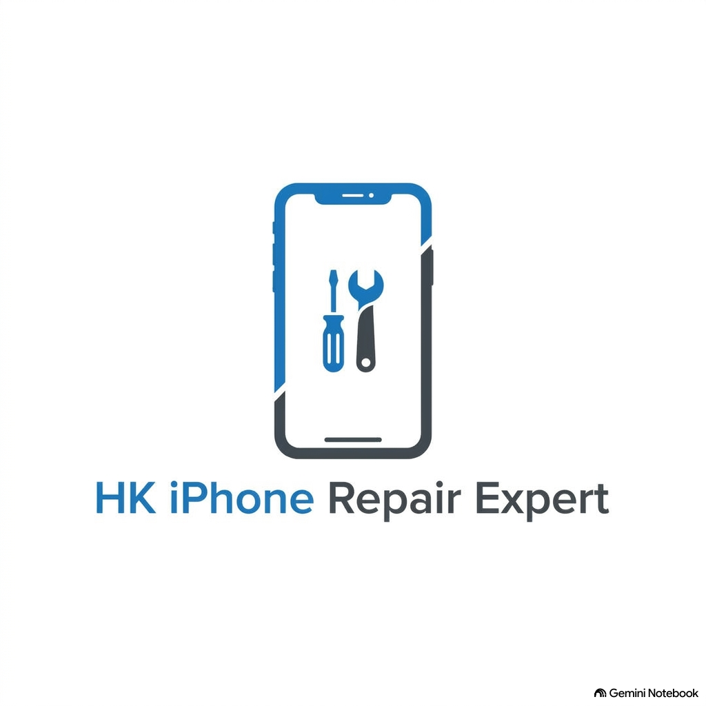

HK iPhone Repair Expert
專業 iPhone 零件維修與透明報價服務
更換電池 / 螢幕（高品質原廠規格零件）
- 採用符合認證規格之高品質電池與原色液晶螢幕。
- 提供「維修 iPhone 便宜」且完全透明的「iPhone 專業維修報價」。
- 更換電池及螢幕後均提供長達 180 天保養期。
iPhone 現場即時維修 & 上門維修香港服務
- 現場即時維修：更換電池或螢幕最快 30 分鐘即時取機。
- 上門維修 iPhone 香港：專人上門即場檢測修復，節省寶貴時間。
iPhone 資料轉移與資料急救服務
- 針對進水、死機、無法開機等狀況進行專業資料救出。
- 比照 Apple 授權維修規範之資料安全防護標準。